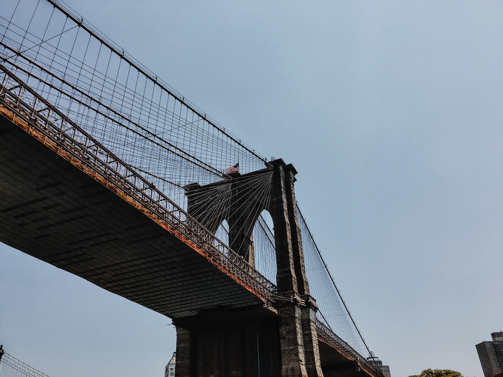
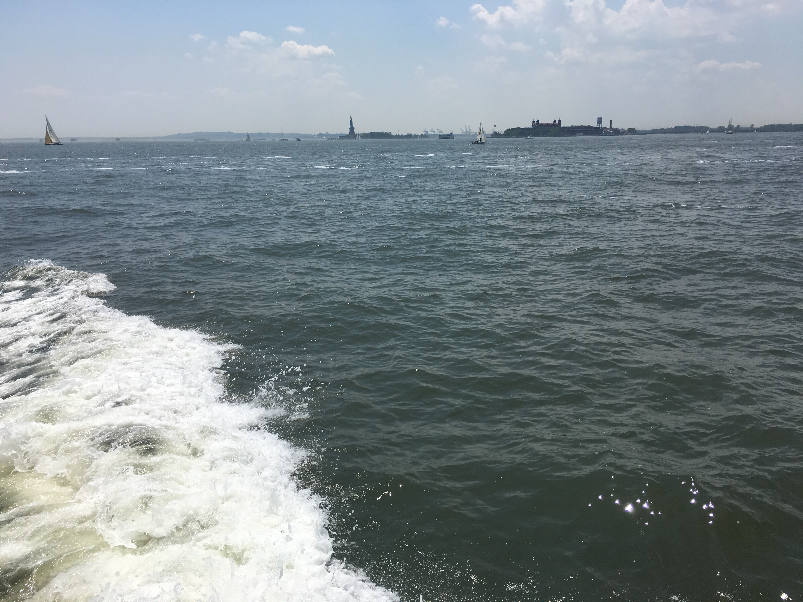
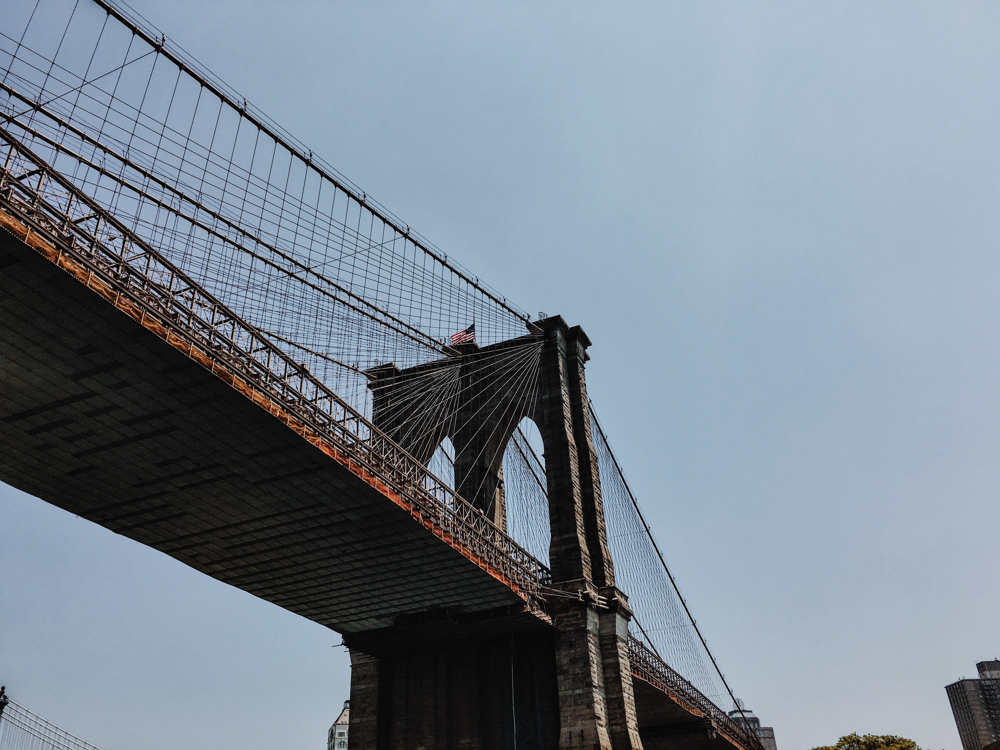
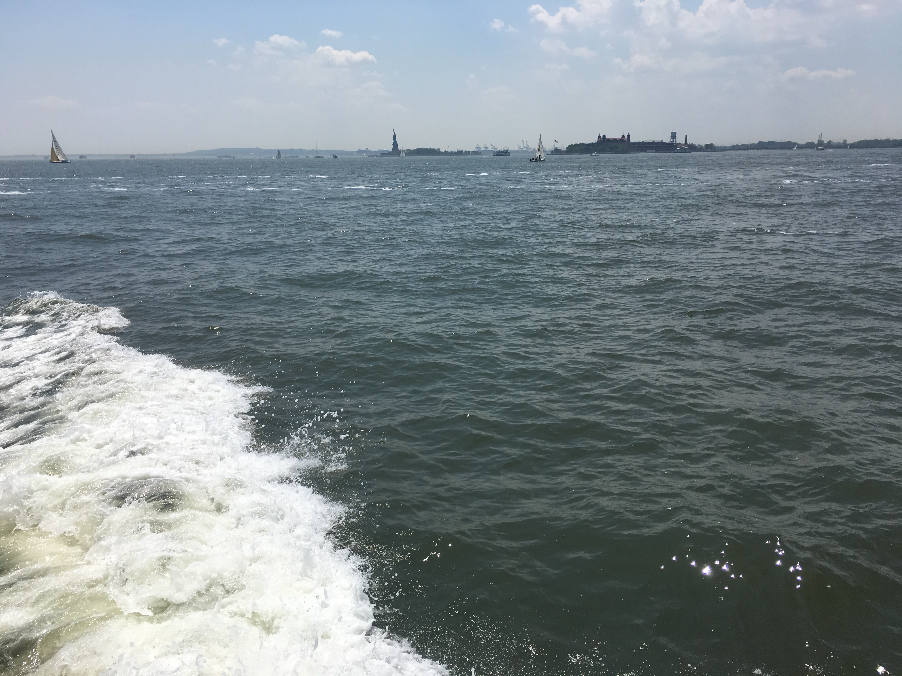
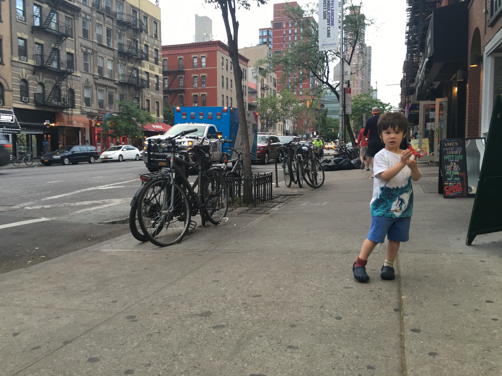
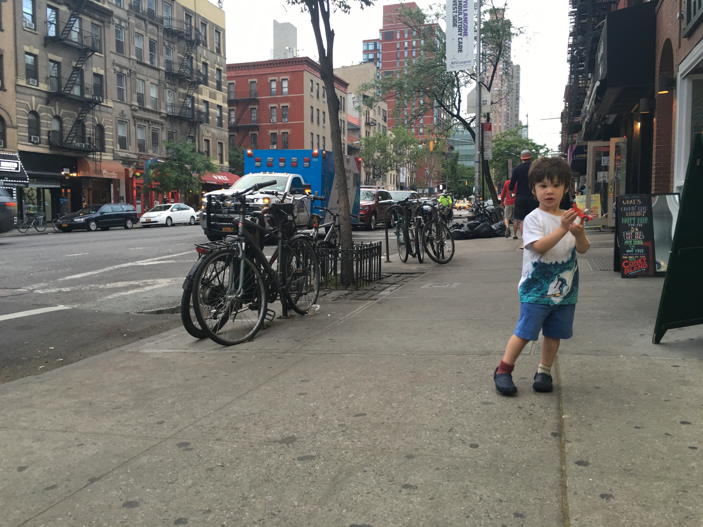

Friday - Half-Day
On the Friday before the long Memorial Day weekend, Zach's school was only half-day. Our favorite park near our neighborhood in Hell's Kitchen is Clinton/DeWitt playground. We tried to go there, but it looked like a entire NYC-sized middle school was at recess there, and Zach is just a little 3-year-old. We checked out the frog fountain just outside the playground instead that are now turned on (since the weather went from 40F to 80F in what seeme like a few days. Zach has never really been into the NYC fountains where the kids play. And that's fine with me. Instead we went to Riverside Park on the Hudson River. It was HOT. Zach climbed up a hill of rocks, made his way to the top, and picked a few flowers. We went home after it got too hot, and Zach napped when we got home. That night, I cooked dinner and aftewards, we went to Amy's Bread and got some ice cream and pastries. We really enjoyed being outside in the NYC summer weather, after a long and cold winter, which we're not used to coming from California now.


Saturday - Circle Line Boat and Battery City Park
Saturday was our tour de force of the weekend. Zach and I started off the day by going to Clinton/Dewitt playground. We stopped off to get water and a sandwich across the street from the playground. We came home, gathered up some things, including Jonathan, and walked ten blocks down to the 42nd Street Port Authority to get on the Circle Line Landmark Cruise. It was great, and Zach really loved it. He ran around, going from outside the deck to inside and up the stairs, excited the whole time. I was so glad, because when we had taken him to the beach before, he's since said "Ocean" every time he saw water with genuine fear. Now, he looked down at the water as the boat sailed, and said, "Ocean," excitedly and with genuine joy.
 



That afternoon, we went down to Battery Park City and had an early dinner. It is such a clean, pleasant, nice area there. And there was a great playground for Zach to play at. He go to go round a bike-ferris-wheel kind of ride there, and had such a good time. We finally, literally, had to pry him off the bike, and headed out to the pier to walk along the water. It was a great night, and so pretty.
Sunday - Two Playgrounds and Cheesecake
Sunday we took it a little easier (or kept it more local, i.e., within a two-block radius of our apartment), and went to the big playground across the street in the morning, followed by lunch at Sullivan Street bakery, a nap, and then a trip to the playground at the elementary school across the street. After that, we went to Junior's near Times Square for their acclaimed cheesecake.
 

Monday - Taking it Easy
On Monday, we wound it down even more. Zach and I spent the morning in the apartment, so it was really nice just to spend time with him at home. He played with his lego helicopter, and we ate breakfast, read a little, and just relaxed. We then went to Whole Foods in Columbus Circle and ate lunch there. Zach and I went to Central Park, but by that time, he was exhausted and didn't really have the energy to play very much. Plus, it was crowded and really hot. We came home and Zach napped. When he woke up, I made hamburgers and broccoli, cut up some avocado, and we went up to our apartment's rooftop, and saw the Empire State Building lit up in red, white, and blue for Memorial Day.